使用指南
面向设计师与开发同学的设计转 Web 代码流程，从环境准备到代码交付，共 15 个步骤。
- 01 结构化设计稿 AI 友好图层规范，自动布局 + 语义命名
- 02 结构解析 & 素材 用截图和画板定位布局，整理可复用资产
- 03 视觉验证 用相同视口和状态对比设计与实现
- 04 Web 代码输出 通过构建与交互验证，提交代码与记录
- 操作步骤
- 15
- 工作阶段
- 3
- 交付平台
- Web
阶段一：准备工作 环境搭建
-
准备开发工具 必需
用浏览器打开本指南。准备一个可以编辑文件的 Web 项目和你常用的编辑器。使用 AI 辅助时，在目标项目中打开 Codex 或其他支持项目文件的编程助手。
-
安装 D2C Skill 可选
下载通用工具包，把其中的
.agents/skills/d2c-web-workflow/放到当前项目的.agents/skills/下。在项目里打开 Codex，输入$d2c-web-workflow并附上参考截图。也可以把 GitHub 仓库地址交给编程助手，请它下载 ZIP 并把 Skill 安装到当前项目。 -
准备设计工具 可选
使用你能打开的设计画板，选中要实现的容器并导出截图。示例使用活动卡片，标注了容器、标题、摘要和按钮。手上只有截图时，在任务单里补充尺寸和状态。
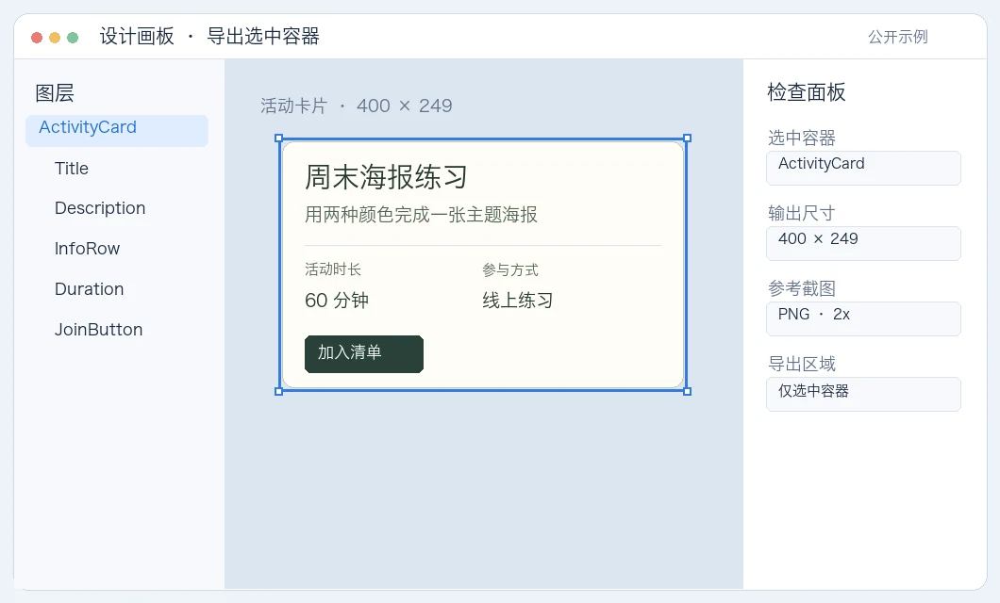
-
配置 Git SSH 公钥 可选
使用 SSH 克隆仓库时，先检查本机已有密钥。需要新建时，为示例命令指定一个未占用的文件名。把
.pub文件的内容添加到代码托管平台，再使用平台提供的 SSH 地址。ssh-keygen -t ed25519 -f ~/.ssh/id_ed25519_d2c -C "you@example.com" cat ~/.ssh/id_ed25519_d2c.pub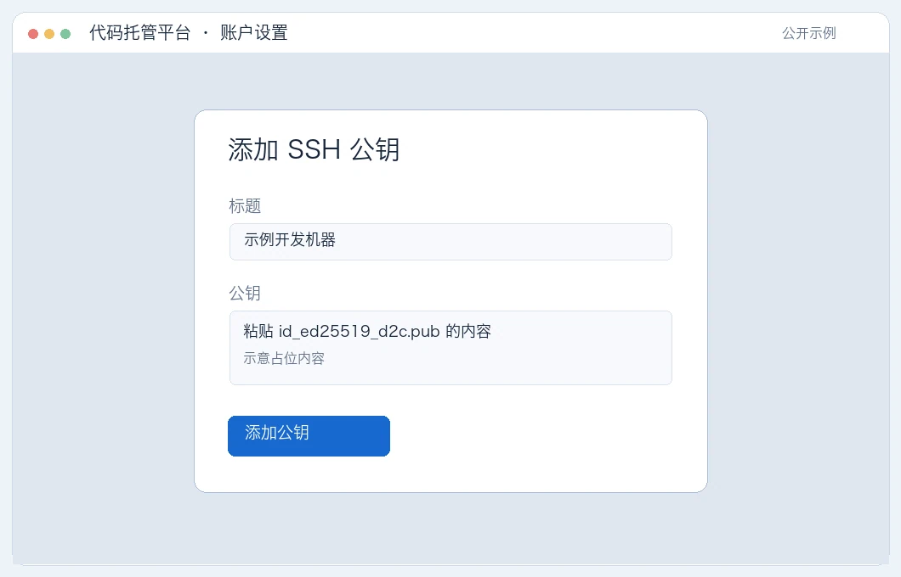
-
克隆代码仓库 必需
已有工作区时，打开目标项目并检查当前分支。需要练习仓库时，可以克隆下面的公开示例。
git clone https://github.com/zhaiyang0421-gif/d2c-web-guide.git cd d2c-web-guide git switch -c feat/activity-card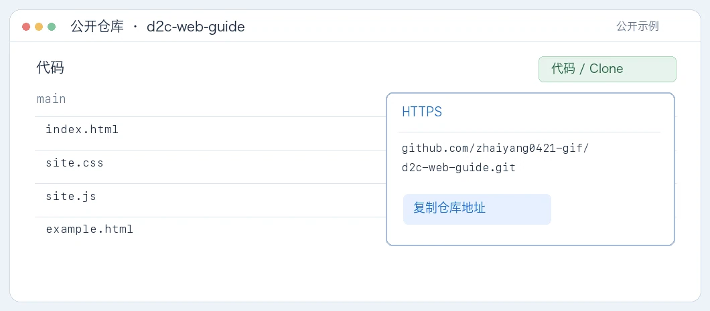
把地址交给编辑器或终端，拉取到本地后打开项目目录。
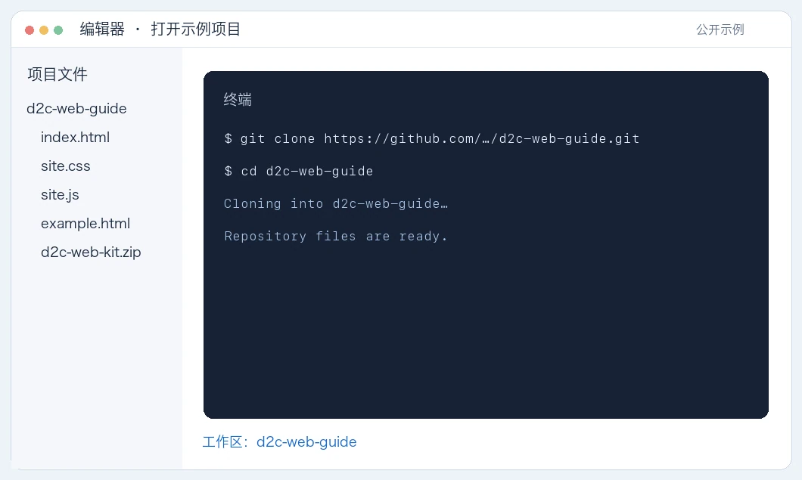
为本次修改建立工作分支。
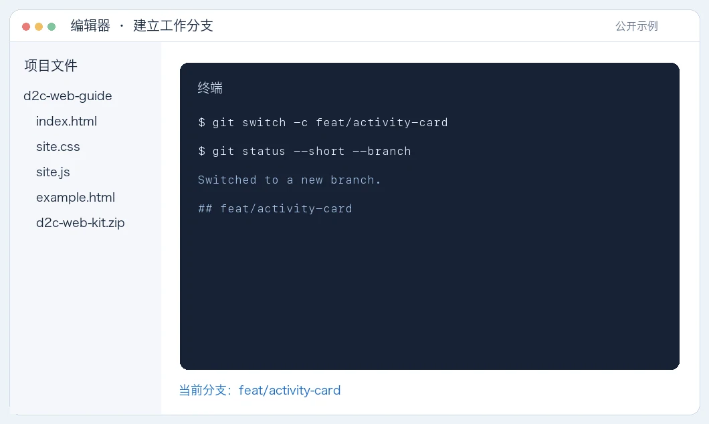
-
安装项目依赖 可选
按目标项目的 README、锁文件和版本配置安装依赖，再运行一次基线预览。使用 pnpm 的项目可以从下面的命令开始。
pnpm install本页的 活动卡片示例 使用原生 HTML、CSS 和 JavaScript，可以直接在浏览器中打开。
阶段二：设计稿准备 设计工具
-
自动布局 (Auto Layout) 必需
先组织容器再填充内容，用自动布局表达行列、间距和对齐。
- 容器使用自动布局，明确绝对定位图层（如悬浮按钮）
- 确保间距、对齐关系为整数，避免小数
- 层级结构遵循前端工程逻辑：容器嵌套 → 行列布局 → 内容填充
-
图层规范检查 必需
核对隐藏元素、重复容器、缺失的自动布局和非预期的小数坐标。把实际参与裁切、遮罩或状态切换的图层标注清楚。
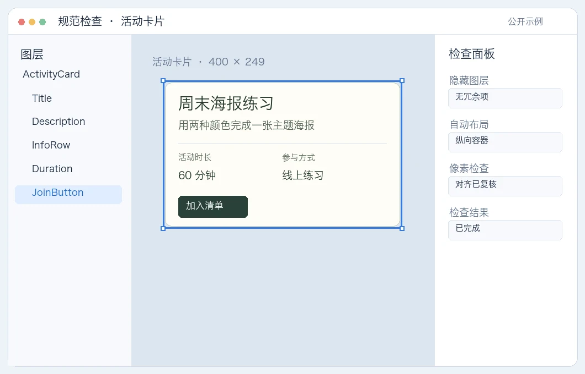
-
图层语义命名 必需
按职责给容器、内容、资产和控件命名，例如
ActivityCard、Title、JoinButton。多个状态可以用变体字段区分。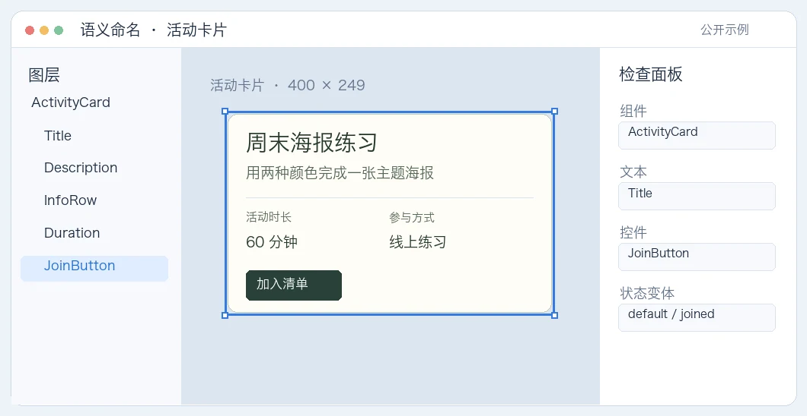
-
Token 创建绑定 可选
把颜色、字体、间距和圆角对应到项目已有的样式变量。缺少映射时，在任务单里记录要确认的项。
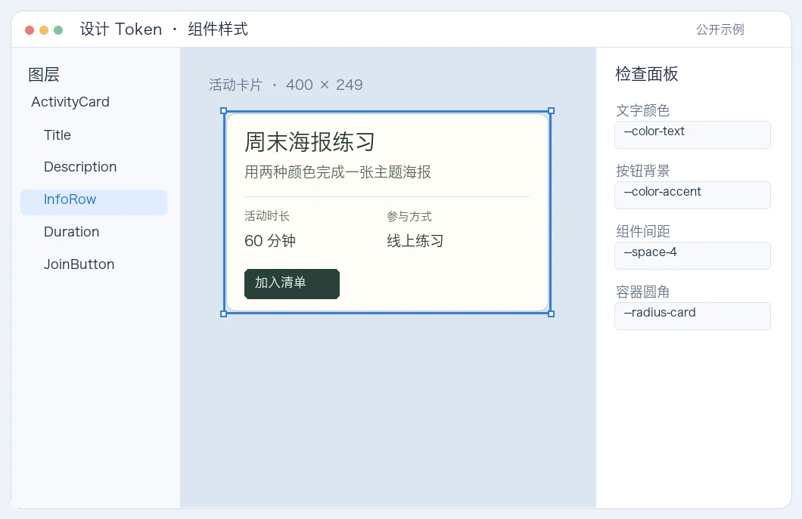
-
导出图片资产 必需
先复用项目已有的图标和图片。需要导出时标注大小与裁切，位图可用 PNG 或 WebP，矢量图标沿用项目资产格式。检查透明边缘和显示倍率。
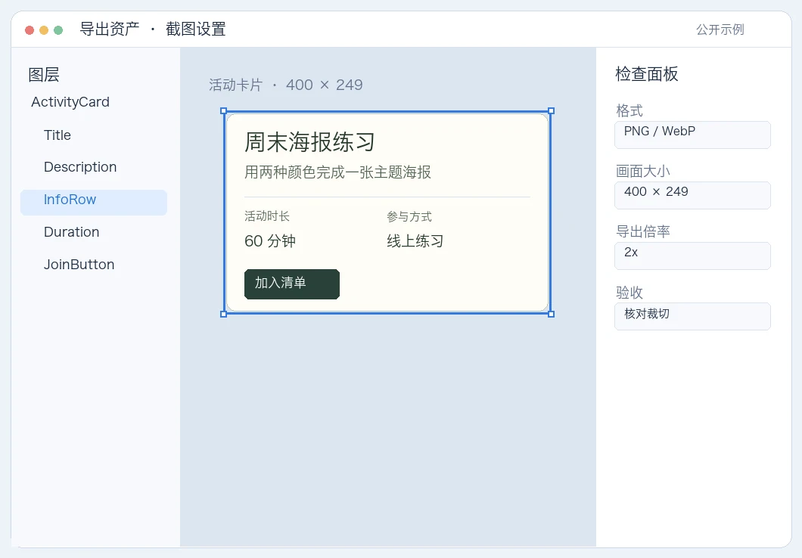
阶段三：Skill 应用与代码生成 Web 开发
-
提交画板链接 + 截图 必需
把目标画板的链接和同版本的截图交给编程助手。补充画布尺寸、目标目录、已有组件和页面状态。设计链接的访问权限取决于画板分享设置，也可以单独提供截图。
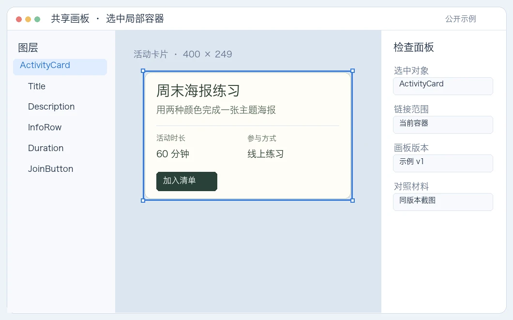
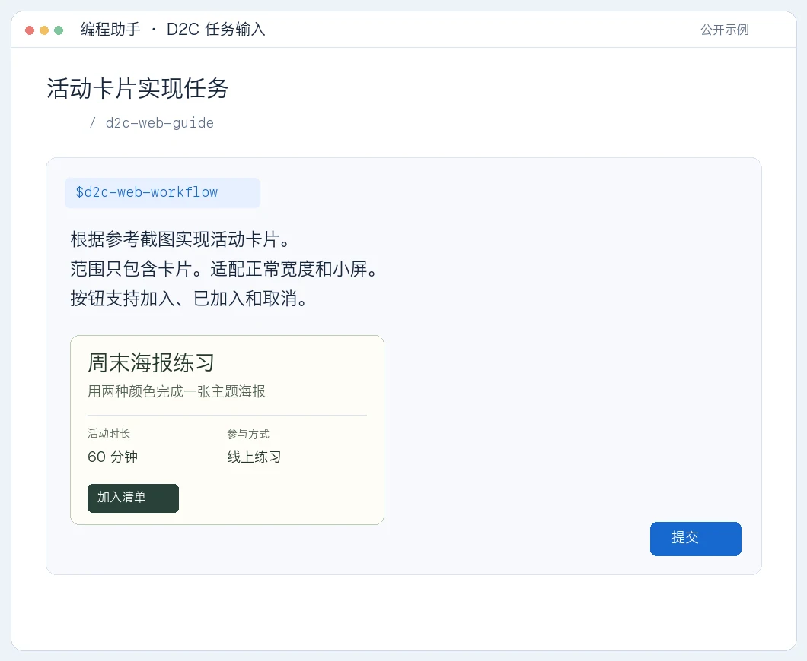
-
选择生成范围 必需
开始生成前，确认这次要实现的范围。
选项 说明 适用场景 A 完整页面 生成整个页面的代码 新页面开发 B 页面区块 生成页面中某个区块的代码 局部模块开发 C 独立组件 生成独立组件的代码 组件级开发 -
Skill 转码与自然语言指令调整 必需
调用
$d2c-web-workflow或把任务单交给编程助手。确认实际改动文件，在浏览器打开实现结果，用相同尺寸和状态对照设计。发现偏差时说明元素、现状和预期，再复验。下面演示从准备输入到验证按钮状态的过程。也可以打开示例自行操作。
视频演示 · 准备截图、确定范围、实现、复验
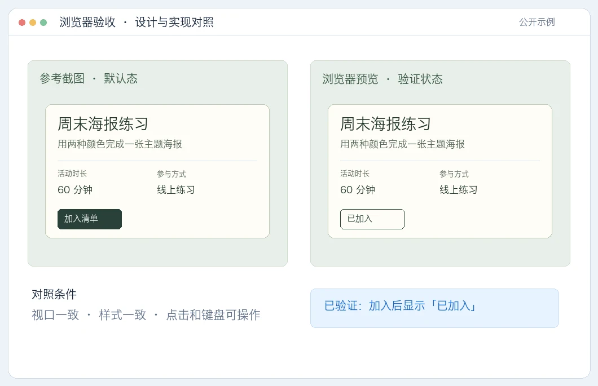
-
交付代码 完成
把变更提交到约定的分支。交接时附上代码和预览链接、参考截图、实际验证命令以及剩余差异。若涉及接口，记录字段和各状态的验收结果。